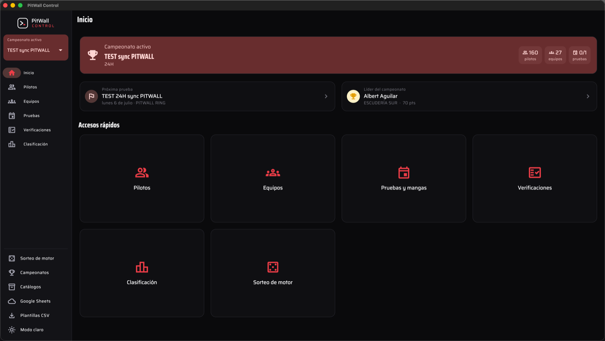
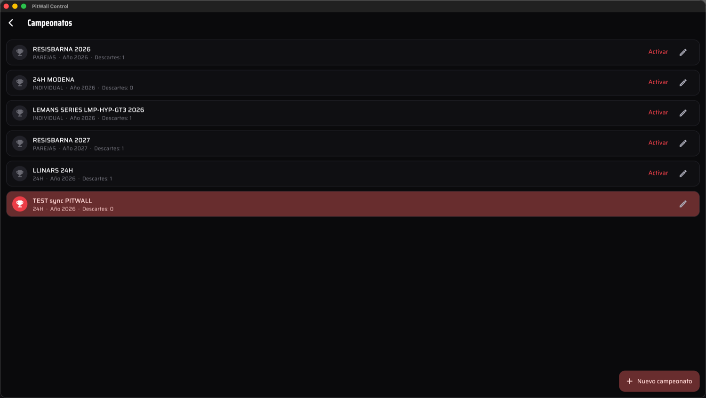
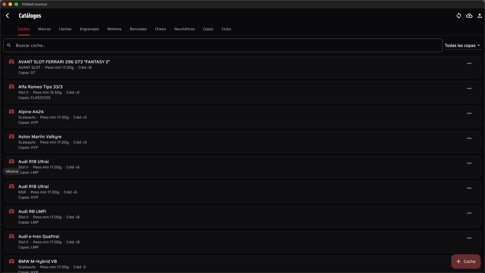
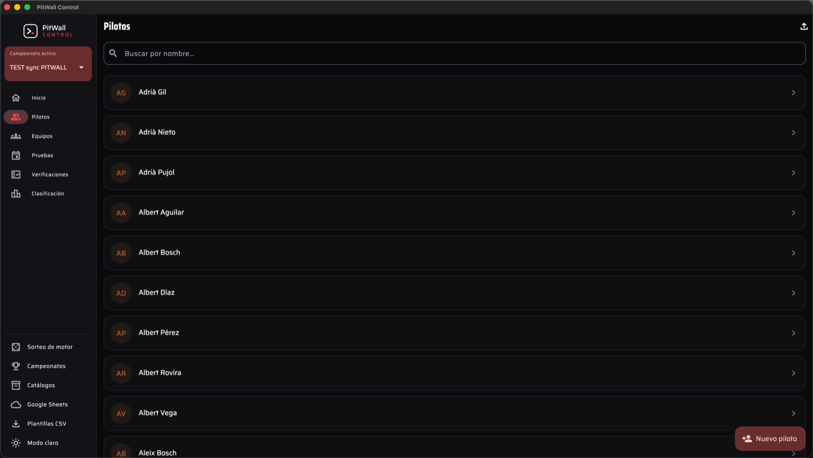
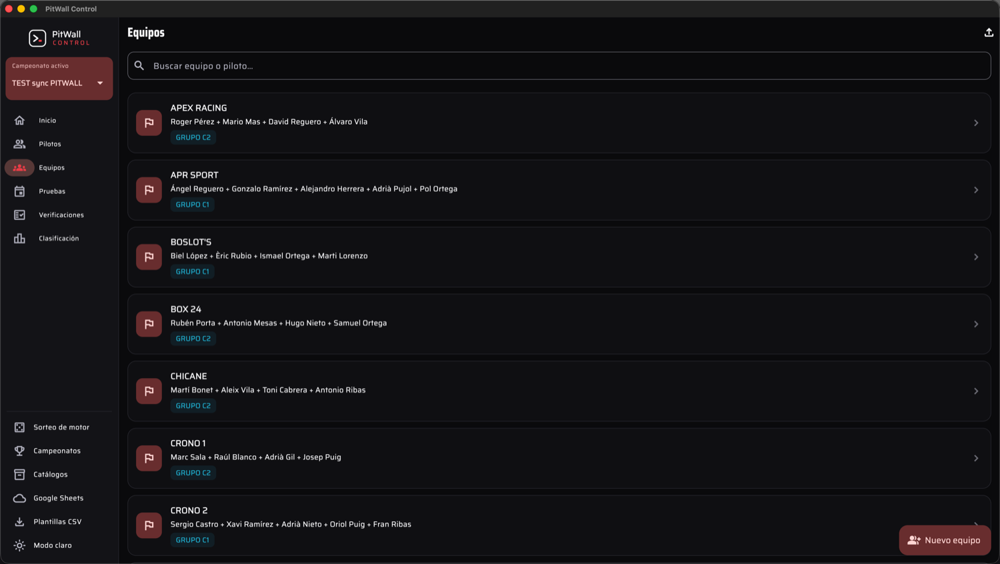
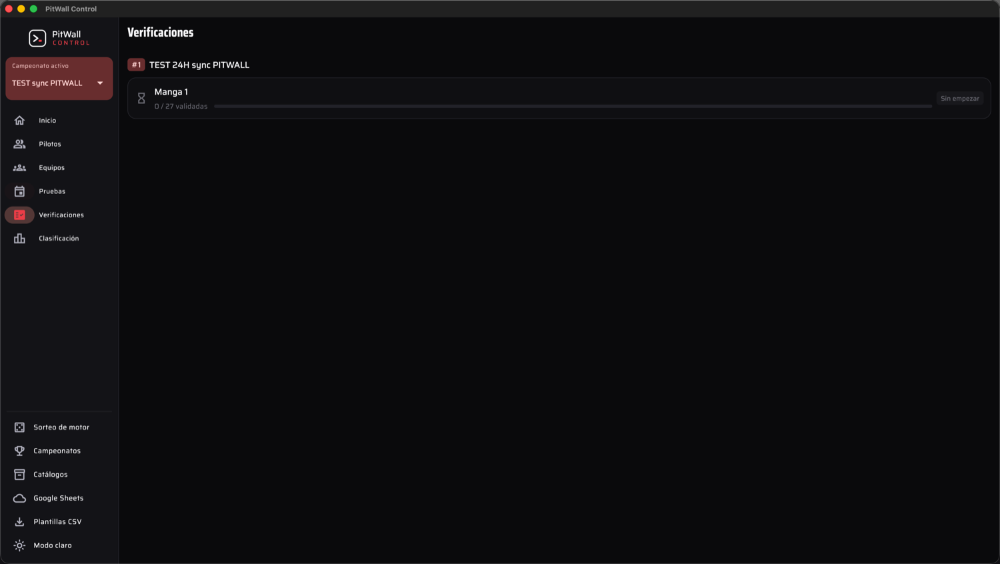
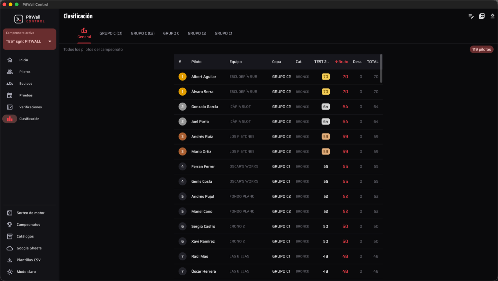
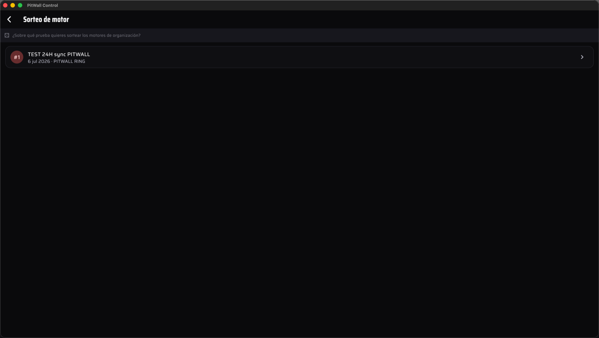
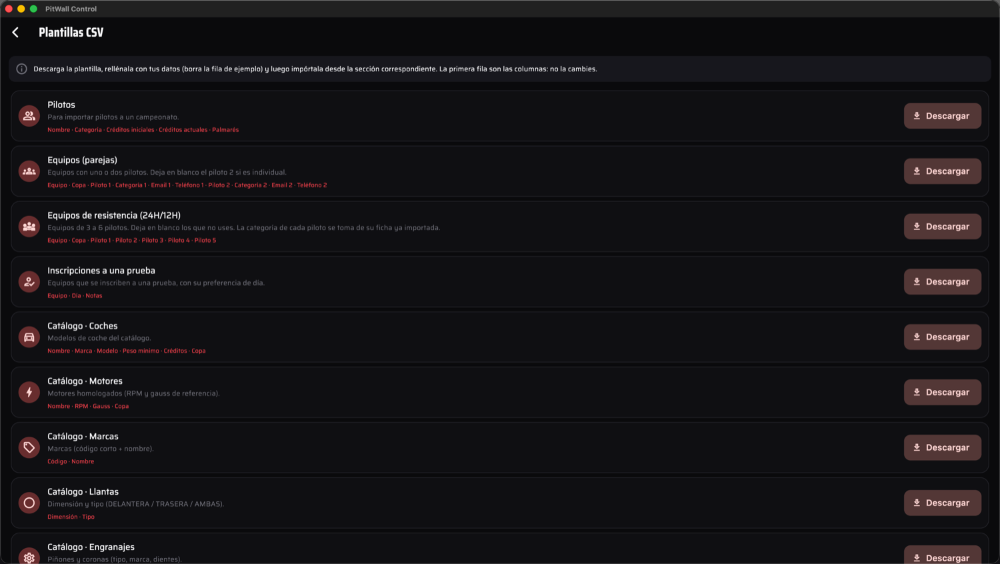

Introducción
PitWall Control es el gestor de campeonatos de slot: la parte administrativa y de temporada. No cronometra carreras (de eso se encarga PitWall, el cronometrador); Control mantiene todo lo que rodea a la competición — pilotos, equipos, catálogos técnicos, verificaciones, créditos, tesorería y clasificación — y se comunica con PitWall para enviar las tandas y traer los resultados.
- Corre en escritorio (macOS/Windows) y en móvil. Los datos viven en el propio dispositivo.
- La navegación principal, a la izquierda, cambia según el campeonato activo: Inicio, Pilotos, Equipos, Pruebas, Verificaciones, Clasificación, Tesorería y Créditos.
- Abajo del panel de navegación tienes los accesos secundarios: Sorteo de motor, Campeonatos, Catálogos, Configuración de Google y Plantillas CSV.
Configuras el campeonato y sus catálogos una vez, y a partir de ahí solo inscribes, verificas y publicas: PitWall Control arrastra las reglas por ti.

Crear el campeonato
Todo cuelga de un campeonato. Desde Campeonatos (acceso secundario) creas uno nuevo y defines cómo funciona. El campeonato que marques como activo es el que ves en toda la app.
Datos básicos
- Nombre, año y organización (aparece en cabeceras y PDF).
- Formato: Individual (1 piloto por equipo), Parejas (2) o Resistencia (equipos de hasta 6 pilotos, típicamente 4-5).
- Copas / categorías: la lista de clases que corren (p. ej. GRUPO C1, GRUPO C2, GT, CLÁSICOS). Se usan para clasificar y para filtrar los catálogos en la verificación.
Reglas técnicas
- Rango de dientes permitido en la verificación: piñón (mín/máx) y corona (mín/máx). Si mín = máx, el valor es fijo (p. ej. piñón 12).
- Rango de sorteo de motor de organización (números mín/máx). Necesario para poder sortear motores.
Módulos opcionales
- Créditos: activa el sistema de hándicap. Si lo desactivas, se ocultan todos los campos y la sección de Créditos.
- Tesorería: activa el control de cuotas por prueba (y su reparto). Si lo desactivas, se oculta.
- Marca: título y lema propios del campeonato para la cabecera y el pie de los PDF. Si los dejas vacíos se usa la marca por defecto de la app.
- Finalizado: marca la temporada como cerrada.

Catálogos (tu biblioteca)
Los catálogos son las listas reutilizables de material homologado. Se mantienen una vez y alimentan los desplegables de la verificación. Cada pestaña tiene buscador y, donde aplica, filtro por copa.
- Coches: modelo, copa(s) a las que pertenece y una foto de referencia (para comparar con el coche que entrega el equipo). Un coche puede valer para varias copas.
- Motores: identificador, RPM, gauss y copa(s).
- Engranajes: piñones y coronas (marca y dientes) con copa(s).
- Neumáticos: nombre, referencia y copa(s).
- Bancadas y chasis: con copa(s).
- Llantas: por eje (delantera / trasera / ambas), marca y medida.
- Marcas, copas y clubs: listas de apoyo.
Puedes rellenar los catálogos a mano, importarlos por CSV (ver Plantillas CSV) o sincronizarlos con Google Sheets (ver Sincronizar).

Pilotos
El piloto es un maestro único (nombre, palmarés, teléfono, email) que puede participar en varios campeonatos. Por cada campeonato tiene un perfil propio:
- Categoría (PLATINO · ORO · PLATA · BRONCE), la "escalera" que usan la bonificación de cierre y la promoción entre temporadas.
- Créditos iniciales/actuales y saldo de la temporada anterior (si el campeonato usa créditos).
- Coordinadora: si un piloto es de coordinadora, su equipo no paga cuota.
Desde Pilotos das de alta, editas y buscas. Para incorporar muchos a la vez, usa la importación por CSV.

Equipos
Un equipo agrupa a los pilotos que comparten coche y corre en una copa concreta. El número de pilotos depende del formato del campeonato:
- Individual: 1 piloto.
- Parejas: 2 pilotos.
- Resistencia: de 1 a 6 pilotos (habitualmente 4-5). Añades y quitas plazas en el editor.
Como en pilotos, puedes crear equipos a mano o importarlos por CSV (la plantilla de resistencia admite columnas Piloto 1…5).

Pruebas y mangas
Una prueba es cada cita del calendario (nombre, sede, fecha, orden). Dentro de la prueba se montan las mangas con sus carriles, y se registran las inscripciones de los equipos.
- Crea la prueba y ordénala en el calendario.
- Inscribe los equipos que participan (cada inscripción guarda la copa que corre el equipo en esa prueba).
- Genera las mangas y su asignación de carriles.

Verificaciones
La verificación es el corazón administrativo del día de carrera: por cada equipo compruebas que su material cumple las normas antes de validarlo. Entras desde Verificaciones, eliges la manga y el equipo.
Bajo el nombre del equipo se muestra la copa que corre, y todos los desplegables se filtran por esa copa:
- Coche: solo modelos de su copa (o "para todas"), con la foto de referencia debajo para comparar con el coche entregado.
- Motor: de organización (con sorteo) o propio, con RPM/medidas.
- Piñón y corona: marca (restringida a las homologadas de esa copa) y dientes, validados contra el rango del campeonato.
- Neumático, bancada, chasis, llantas: filtrados por la copa.
- Peso, suspensión, trencilla, observaciones y fotos.
La verificación se autoguarda como borrador con cada cambio (arriba a la derecha ves el estado: pendiente / guardando / guardado), así que puedes tener varias abiertas sin perder nada. Cuando todo cumple, aparece "Todo cumple las normas. Puedes validar" y confirmas.
Clasificación
La clasificación se calcula con los resultados de las pruebas y las reglas del campeonato:
- Tabla de puntos por posición (definida por campeonato).
- Descartes: número de peores resultados que no cuentan.
- Tope de regularización.
- Por copa: la clasificación es individual (por piloto) dentro de cada copa/categoría.
Se exporta en PDF (ver Exportar).

Tesorería
Si el campeonato usa tesorería, cada prueba tiene una cuota por equipo, con reparto entre coordinadora y club. Los pilotos de coordinadora no pagan. Desde Tesorería llevas el control de lo cobrado por prueba.
Créditos y cierre
El sistema de créditos es el hándicap del campeonato: cada piloto arranca con unos créditos y estos suben o bajan según el resultado. Desde Créditos ves el saldo, los movimientos (cada uno con su descripción) y gestionas el cierre.
Bonificación de cierre
Al terminar la temporada se aplica una bonificación en función de la categoría del piloto y del número de carreras disputadas (tramos configurables por campeonato). El movimiento queda descrito (p. ej. "bonificación por 6 carreras").
Revisión de categorías
Antes de finalizar, la pantalla de Revisión de categorías permite decidir, piloto a piloto, si promociona, desciende o se mantiene (botones Subir / Bajar / Mantener sobre la escalera BRONCE→PLATA→ORO→PLATINO). Esa categoría resultante se usa para la bonificación y como categoría inicial al importar al siguiente campeonato. La pantalla tiene buscador por nombre.
Sorteo de motor
Para los motores de organización, PitWall Control sortea un número dentro del rango configurado en el campeonato, descontando los ya asignados en la prueba. Puedes sortear desde el acceso Sorteo de motor (eligiendo prueba) o directamente dentro de la verificación del equipo.

Sincronizar con Google Sheets
Los catálogos se pueden sincronizar de forma bidireccional con una hoja de Google, útil para editar en equipo o hacer copia. Desde Configuración de Google conectas tu cuenta e indicas la hoja.
- Conecta tu cuenta de Google y autoriza el acceso.
- Indica la hoja de cálculo que usarás como catálogo.
- Bajar del Sheet trae los datos a la app; Subir al Sheet envía los tuyos. Los conflictos se resuelven fila a fila.
Plantillas CSV
Desde Plantillas CSV (acceso secundario, global) descargas las plantillas listas para rellenar e importar: pilotos, equipos (incluida la de resistencia con columnas Equipo · Copa · Piloto 1…5) y catálogos. Rellenas el CSV, lo importas desde la sección correspondiente y la app mapea las columnas automáticamente.

Exportar en PDF
PitWall Control genera PDF de verificaciones, mangas, clasificación y créditos. Al exportar eliges el idioma del documento (español, inglés, italiano o francés) y se aplica la marca del campeonato (título y lema) en cabecera y pie.
Enviar a PitWall / traer resultados
PitWall Control se comunica con el cronometrador PitWall para no teclear dos veces: le envía la prueba montada (equipos, carriles y rotación) y luego trae los resultados para clasificación y créditos. Ambas apps deben estar en la misma red LAN/WiFi.
Enviar la tanda a PitWall (ida)
Genera la tanda (formato pitwall.tanda/v1) para que PitWall autocree la carrera — cada manga se convierte en una tanda con cada equipo en su carril de salida, y los descansos (D1…Dk) se colocan y rotan correctamente. Hay dos vías:
- Exportar tanda (JSON): guarda la prueba en un archivo que luego subes en PitWall (Carreras → Importar tanda). Al exportar a fichero, la app te pregunta si la carrera tiene pole.
- Enviar a PitWall (por red): Control descubre el PitWall en la red local (o le indicas la IP a mano) y te pide el PIN de emparejamiento — el que muestra la pantalla Importar tanda de PitWall.
Traer los resultados de PitWall (vuelta)
Cuando la carrera ha terminado, desde el panel de la prueba pulsas Traer resultados de PitWall:
- Eliges el PitWall de la red y ves la lista de carreras; seleccionas la que corresponde a esta prueba.
- Control muestra una previsualización con los equipos casados por nombre, para que revises el emparejamiento antes de aplicar.
- Al aplicar, se escriben las posiciones por manga en la prueba. Los puntos los pone Control con su tabla de puntos (no vienen de PitWall).
Glosario
- Campeonato: el contenedor de toda la temporada (formato, copas, reglas, módulos).
- Copa / categoría: la clase en la que corre un equipo (GRUPO C1, GT, Clásicos…). Filtra catálogos y agrupa la clasificación.
- Formato: Individual (1), Parejas (2) o Resistencia (hasta 6 pilotos por equipo).
- Catálogo: biblioteca reutilizable de material (coches, motores, engranajes, neumáticos, bancadas, chasis, llantas…).
- Perfil de piloto: los datos del piloto en un campeonato (categoría, créditos).
- Prueba: cada cita del calendario; contiene mangas e inscripciones.
- Manga: una tirada de la prueba con su asignación de carriles.
- Verificación: comprobación del material de un equipo contra las normas antes de validarlo.
- Foto de referencia: imagen del coche en el catálogo para comparar con el que entrega el equipo.
- Créditos: sistema de hándicap; suben/bajan según el resultado.
- Bonificación de cierre: créditos que se suman al final según categoría y nº de carreras.
- Revisión de categorías: promoción/descenso de cada piloto antes de cerrar (escalera BRONCE→PLATINO).
- Escalera de categorías: BRONCE · PLATA · ORO · PLATINO.
- Descarte: peor resultado que no cuenta para la clasificación.
- Tesorería: cuotas por prueba y su reparto (coordinadora / club).
- Tanda: paquete de la prueba (pitwall.tanda/v1) que se envía a PitWall.
- Traer resultados: importar de PitWall las posiciones por manga (casadas por nombre) para clasificación y créditos; los puntos los pone Control.
- PIN de emparejamiento: código que muestra PitWall en Importar tanda y que Control pide para autorizar el envío por red.
- Marca: título y lema del campeonato que se estampan en los PDF.